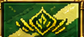
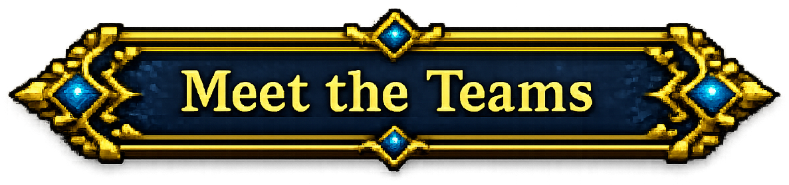
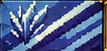
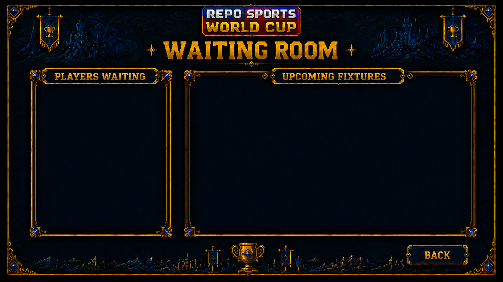
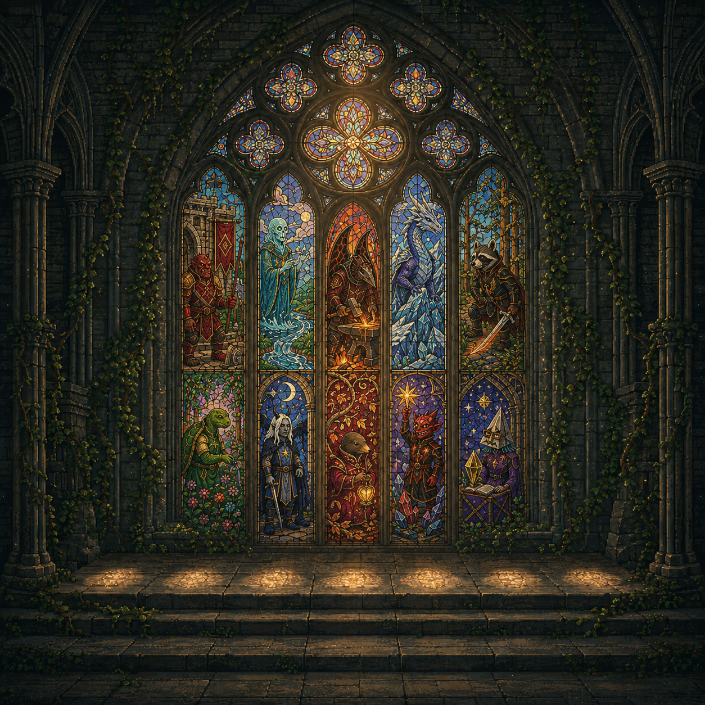

REPO SPORTS PRESENTS
WORLD CUP 2026 · VARDESH
THE FINAL
Two nations remain · one match decides the world
◆
ROVARNVolki · Varko · Rovo
VS

TALUNESoup · Tuli · Lumi
THE IRON FLAME · ROVARNTALUNE · THE GREEN CROWN
THE LAST ARENACELESTINE CROWN CITADELTONIGHT · LIVE FROM THE VARDESH HIGH PEAKS
● LIVE ROOM OPENENTER THE FINALROVARN VS TALUNE · ONE MATCH FOR THE WORLD




LIVE DRAW OPENS
00:00:00
QUARTER FINAL DRAW
The official draw begins at 11:30pm UK.
ADMIN TEST · NOT SAVED
THE DRAW IS ABOUT TO BEGIN

QUARTER FINAL DRAW
STAND BY
LIVE FROM VARDESH
QUARTER FINAL BRACKET
TEAM · OPPONENT · HOST STADIUM

REPO SPORTS · ADMIN LIVE CONTROLCHOOSE LIVE FIXTURE
Select the lobby to load. Match-engine switching will be connected next.
REPO SPORTS · WORLD CUP 2026
FIXTURE LOCKED
Friday 21st August · 9pm · Warmvein Arena
LIVE ROOM OPENS 15 MINUTES BEFORE KICKOFF
00D 00H 00M 00S

LIVE TEST LOBBY0 / 12
Connecting to the waiting room…
Waiting for CatAsthma to start
Waiting for the host · CatAsthma controls the start
Adventurer
Member since May 2024
Online
Global
FAVOURITE CARD
No favourite card
Set one in your binder
1
0 total Harmony XP
83 XP remaining
LOCKED
LOCKED
LOCKED
LOCKED
LOCKED
LOCKED

ADMIN · SANCTUARY STEPS
OLD SCHOOL
REPO COMPANY
TOMBS OF AMASCUT
42
WARDENS · EXPERT MODE
STELLARIS⚡ 8K ◆ 14K ☄ 2K
▸▸▸▸▸
UNITED EARTH FLEET
Surveying unknown system…
THE BINDING OF ISAAC
♥♥♡
BASEMENT II · 03:17
RED DEAD REDEMPTION II
HEARTLANDS · WANTED: DEAD OR ALIVE
THE LAST OF US
PITTSBURGH · SURVIVE TOGETHER
DRESS TO IMPRESSROBLOX
★★
THEME: OLD MONEY · 03:42
HARMONY LEVEL: 1
TRAININGLevel your adventurer
OTHERClan tools, challenges and games
LEGACY MODE · RESULTS NOT RECORDED
GRYFFINDOR0No scorers yet
3:00LIVE1 WATCHING LIVE
SLYTHERIN0No scorers yet
 WATCH XP400 ACTIVE · 200 BACKGROUND / MIN
WATCH XP400 ACTIVE · 200 BACKGROUND / MIN
+400AGILITY XP
PURCHASE COMPLETE
●−1,200 GPTAKEN FROM YOUR BANK
🎣+1,200 FISHING XPADDED TO YOUR ACCOUNT
BANK: 0 GPFISHING: 0 XP
VS25TEAMS TAKING FLIGHTLIVE FROM THE PITCHPREDICT THE WINNER · +1,000 GPChoose before the match begins.NO PREDICTIONS YET
REPO_ADMIN.EXE_ □ ×
C:\REPO\ADMIN> access_granted
SELECT COMMAND:
C:\REPO\ADMIN>█